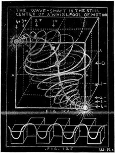
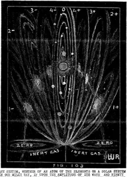
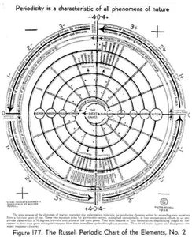

Part XII (Lessons 45–48): As on Earth So in Heaven & The Making of Matter¶

Lesson 45: Prelude to the Last Four Lessons
Not one word of science, philosophy or law has been written in these lessons simply because they were science, philosophy or law, but because they are God’s ways which you must know in order to make God’s ways YOUR ways.

Lesson 46: As on Earth So Is It in Heaven
When you walk through the forest it never occurs to you that all the trees are dying for you see forest growth at all stages at all times. You see new trees sprouting from invisibility to visibility. You see young saplings growing strong and mature ones passing into the beginnings of old age which precedes decay and disappearance into zero from which they all sprang at different periods.

Lesson 47: We Now Consider the Making of Matter
The time has now come when we must very briefly sum up all which has heretofore been written into a climaxing picture which the many brush strokes of the past lessons have made possible.

Lesson 48: The Supreme Question and Mystery of Creation
From whence and what cometh energy for the initial impulse of power and speed which is given to any creating body and multiplies it for a time before withdrawing all of it for another period between eternal cycles of beginnings and endings in an eternity which has no beginnings and endings?